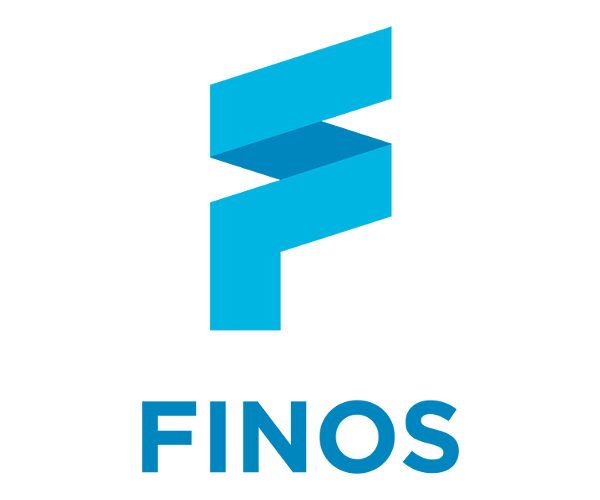
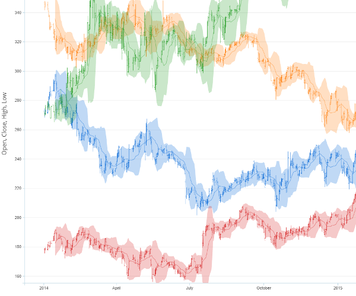
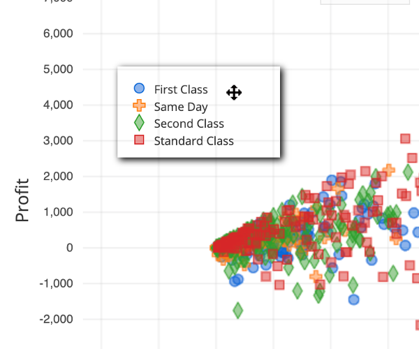
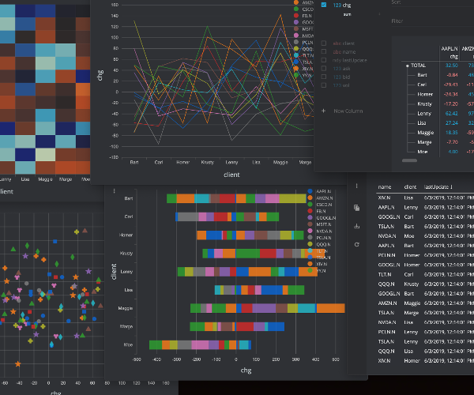
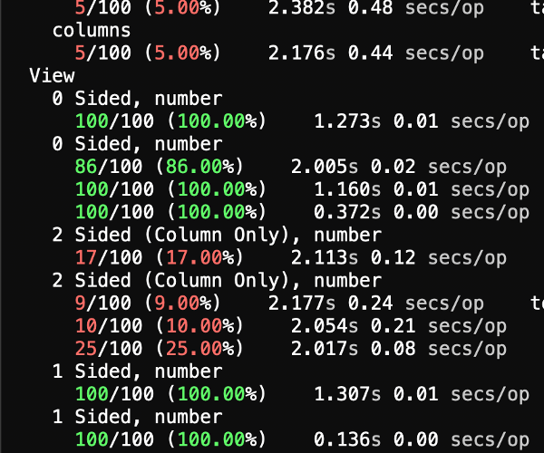
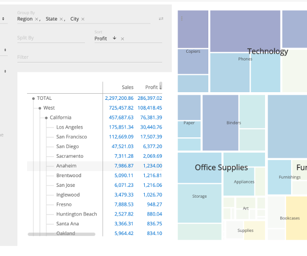

0.3.0 Release

Perspective 0.3.0 is out now, thanks to the tireless effots of the Perspective Contributors! With this release comes the standard new-release Features, APIs, and Fixes; more importantly, it also features - a new home!

@jpmorganchase/perspective is now @finos/perspective as Perspective moves to the
Fintech Open Source Foundation. The project Github,
Gitter and Travis CI have moved as well.
... of course, the Features, Fixes and APIs are really important too. So much so that they have their own section.
D3FC Plugin

An entirely new charting plugin based on D3FC, with new
chart types as well as all your old favorites. @finos/perspective-viewer-d3fc is
completely OSS, and fully replaces @finos/perspective-viewer-highcharts.

Featuring new charts like Candlestick, as well as new zoom interactions, resizable and repositionable legends, multiple Y-axes, and more!
Data

Perspective now supports full streaming via Apache Arrow. Load your data into
a perspective instance on the server via node.js, and stream state & updates via
Apache Arrow to a perspective instance in the browser, without ever
converting touching JSON.
CPU time and memory usage improvements to reading, querying and writing performance have been made, as well as a new scheduler with substantially better overall data throughput.

With the new perspective-cli command-line tool, encode an Arrow from a CSV
or even host a simple Perspective HTTP/WebSocket server.
UX

<perspective-viewer> now emits interaction events for all plugins types, which
can be hooked wired together with other <perspective-viewer>s to create
complex cross-filtered dashboards.

New copy, download, reset actions available via an options toolbar, and
flatten quickly withshift-click. Render warnings prevent huge visualizations
from unintentionally overwhelming the browser. Smart category filters, column
sorting, and more!
New APIs
@finos/perspective-viewer-d3fcD3FC plugin - a new comprehensive OSS charting replacement.@finos/perspective-cliA handyperspectiveCLI tool for manipulating and inspecting data.@finos/perspective-webpack-pluginmodule for building Webpack applications containing perspective.@finos/perspective-phosphorPhosphorJS component.perspective-clickevents (for cross-filtering).to_arrow()methods has been added toview().replace(),clear(),get_config(), methods have been added totable().copy(),download(),reset(),flush(),styleElement()methods have been added to<perspective-viewer>on_update()now optionally provides modified rows as an Apache Arrow encodedArrayBuffer.- New CSS custom-style options for all plugin types, including for
@finos/persiect-veivewer-d3fc. datetype, in addition to existingdatetime.- Column sorting directions
"col asc","col desc","col abs asc","col abs desc".
Structural improvements
- Shadow DOM
- Windows build support